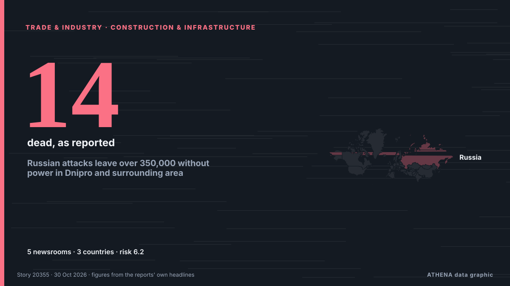

Russian attacks leave over 350,000 without power in Dnipro and surrounding area

More than 350,000 consumers in Dnipro and surrounding settlements have been left without electricity following Russian attacks. von Ukrinform (English)
Unabhängig gemeldet von 5 Medien in 3 Ländern seit dem 22. Okt., zuerst von Ukrinform (English); die Berichterstattung flaut ab. ATHENA stuft das Risiko als hoch ein (6.2/10), vor allem wegen der Schwere des beschriebenen Schadens und seiner geografischen und sektoralen Reichweite. Die Konfidenz liegt bei 71 % (hoch): 5 Medien bestätigen es unabhängig, bei einer mittleren Verlässlichkeit der Quellen von 80 %. Medien nach Land: Ukraine (26), Aserbaidschan (1), Saudi-Arabien (1). Berichterstattung: 22. Okt. bis 30. Okt., 198 Stunden.
Warum es wichtig ist: Störungen in Handel, Industrie oder Infrastruktur wandern durch die Lieferketten und verändern Kosten und Lieferzeiten weit entfernt.
Was sich geändert hat: 9 neue Berichte von 3 Redaktionen in den 24 Stunden bis 30. Okt..
Erste Schlagzeile: Russian forces strike Dnipro again
Schlagzeilen werden auf Englisch angezeigt, wie veröffentlicht.
Auf einen Blick
Ausgewählt, bewertet und geschrieben nach der veröffentlichten Methodik von ATHENA. Kein Redakteur greift in einzelne Ereignisse ein. So entsteht ATHENA ›
| 22 Oct 09:43 UTC | 1 |
|---|---|
| 22 Oct 21:43 UTC | 2 |
| 23 Oct 09:43 UTC | 2 |
| 23 Oct 21:43 UTC | 0 |
| 24 Oct 09:43 UTC | 0 |
| 24 Oct 21:43 UTC | 3 |
| 25 Oct 09:43 UTC | 0 |
| 25 Oct 21:43 UTC | 0 |
| 26 Oct 09:43 UTC | 0 |
| 26 Oct 21:43 UTC | 0 |
| 27 Oct 09:43 UTC | 1 |
| 27 Oct 21:43 UTC | 0 |
| 28 Oct 09:43 UTC | 3 |
| 28 Oct 21:43 UTC | 2 |
| 29 Oct 09:43 UTC | 8 |
| 29 Oct 21:43 UTC | 3 |
| 30 Oct 09:43 UTC | 3 |
| 22 Oct 09:43 UTC | 0.0 |
|---|---|
| 23 Oct 06:41 UTC | 2.5 |
| 23 Oct 08:06 UTC | 5.5 |
| 25 Oct 08:48 UTC | 4.7 |
| 28 Oct 20:03 UTC | 5.6 |
| 29 Oct 09:56 UTC | 6.3 |
| 31 Oct 19:28 UTC | 6.2 |
| 31 Oct 19:28 UTC | 6.2 |
Warum diese Zahlen
Bedeutung
Risiko
Konfidenz
Die Berichterstattung – wer berichtete, und wann
Schlagzeile wie veröffentlicht · öffnet das Original- Ukrinform (English) · UkraineRussian forces strike residential area in Dnipro
- Ukrinform (English) · UkraineRussian forces attack Dnipro and region nearly 20 times since evening, two injured
- Ukrinform (English) · UkraineRussian forces attack Rivne region overnight, leaving parts of region without power
- Ukrinform (English) · UkraineRussian forces attack critical infrastructure facility in Dnipro
- Ukrainska Pravda (English) · UkraineRussians strike Dnipro multiple times during the day, killing a person and injuring five – photos
- Ukrainska Pravda (English) · UkraineRussian forces strike critical infrastructure in Dnipro
- Ukrinform (English) · UkraineRussia strikes critical infrastructure in Dnipro
- Ukrinform (English) · UkraineRussian forces attack civilian infrastructure in Rivne region overnight
- Ukrainska Pravda (English) · UkraineRussian attack damages school stadium in Dnipro
- Ukrinform (English) · UkraineRussian strike sparks fire at factory in Dnipro
- Ukrainska Pravda (English) · UkraineMan injured in Russian attack on industrial facility in Dnipro
- Kyiv Post · UkraineRussian Strike on Dnipro Industrial Site Injures 1 as Attacks Across Region Wound 5 Others
- Ukrainska Pravda (English) · UkraineRussians attack train station in Dnipro, 14 killed and 14 injured, child in serious condition – video, photos
- APA (English) · AserbaidschanRussian army strikes electric train in Ukraine's Dnipro, killing 13 people
- Kyiv Post · UkraineRussian Drone Strike on Dnipro Railway Platform Kills 14, Injures Over Dozen
- Asharq Al-Awsat (English) · Saudi-ArabienRussian Drone Hits 2 Trains Stopped at a Station in Central Ukraine, Killing 13
- Ukrinform (English) · UkraineRussian attack on Dnipro railway station kills at least 13, injures 13
- Ukrainska Pravda (English) · UkraineZelenskyy calls for tougher sanctions after Russian attack on Dnipro
- Ukrainska Pravda (English) · Ukraine"Dozens of shrapnel wounds": update on those injured in Dnipro railway station strike
- Ukrainska Pravda (English) · UkraineOver 25,000 consumers left without power in Dnipro
- Ukrainska Pravda (English) · UkraineRussian drone strikes student accommodation in Dnipro
- Ukrinform (English) · UkraineRussian forces strike student dormitory in Dnipro, two teenage girls injured
- Ukrainska Pravda (English) · UkraineOver 350,000 consumers left without power after Russian attacks on Dnipro and nearby settlements
- Ukrinform (English) · UkraineRussian attacks leave over 350,000 without power in Dnipro and surrounding area
- Kyiv Post · UkraineRussian Attack Left Over 350,000 Without Power in Dnipro
- Ukrinform (English) · UkraineRussian forces strike Dnipro again
- Ukrainska Pravda (English) · UkraineRussians strike critical infrastructure in Dnipro for second time in one day
- Ukrinform (English) · UkraineRussian forces strike critical infrastructure facility in Dnipro